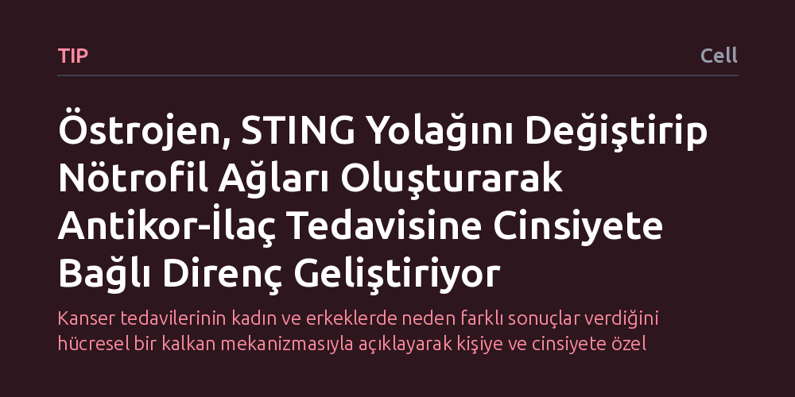

TIP · Cell · 2026-10-13
Araştırmacılar, antikor temelli kanser tedavilerinde görülen cinsiyet kaynaklı etkinlik farklarının altında yatan biyolojik mekanizmaları inceledi. Östrojenin STING yolağını yeniden programlayarak nötrofil tuzakları oluşturduğunu ve antijenleri perdeleyerek antikor-ilaç konjugatlarının etkinliğini sınırladığını tespit ettiler.
Kanser tedavilerinin kadın ve erkeklerde neden farklı sonuçlar verdiğini hücresel bir kalkan mekanizmasıyla açıklayarak kişiye ve cinsiyete özel tedavi tasarımlarının gerekliliğini ortaya koyuyor.

Kanser tedavisinde son yılların en dikkat çekici gelişmelerinden biri, hedefe yönelik antikor temelli tedaviler ve özellikle antikor-ilaç konjugatlarıdır (ADC). Bu gelişmiş tedaviler, kemoterapi yükünü doğrudan tümör hücrelerine taşıyarak sağlıklı dokulara verilen zararı azaltmayı amaçlar. Ancak klinik uygulamalarda aynı ilacın kadın ve erkek hastalarda neden farklı etki gösterdiği ve direnç mekanizmalarının neden cinsiyete göre değiştiği uzun süredir aydınlatılamayan kritik bir sorun olarak ortada durmaktaydı.
Cinsiyet hormonlarının ve bağışıklık yanıtlarının bu tedavilerin başarısını nasıl etkilediğinin bilinmemesi, bazı hastaların tedaviye neden hızla direnç geliştirdiğini açıklamayı zorlaştırıyordu. Eğer bir ilacın etkinliği biyolojik cinsiyetten kaynaklanan süreçlerle sınırlandırılıyorsa, bu mekanizmayı çözmeden her hasta için eşit derecede güvenilir ve başarılı tedavi rejimleri tasarlamak mümkün değildir. Çalışma, tam olarak bu eşitsizliğin kökenindeki hücresel mekanizmayı aydınlatmayı hedeflemektedir.
Araştırmacılar, antikor temelli tedavilere karşı gelişen direncin kaynağını tespit etmek için hücresel ve moleküler düzeyde kapsamlı deneysel yöntemler kullandı. Deneylerde özellikle östrojen hormonunun varlığında bağışıklık hücrelerinin ve tümör çevresindeki mikro ortamın nasıl tepki verdiği basamak basamak incelendi.
İnceleme sürecinde, hücre içi sinyal iletiminde kritik rol oynayan STING yolağı ile doğuştan gelen bağışıklığın önemli bir parçası olan nötrofillerin etkileşimine odaklanıldı. Araştırma ekibi, hormonal sinyallerin bağışıklık hücrelerinin davranışlarını nasıl yönlendirdiğini ve antikorların hedeflerine ulaşmasını zorlaştıran olası engelleri biyokimyasal analizlerle haritalandırdı.
Elde edilen bulgular, östrojen hormonunun STING sinyal yolağını yeniden programlayarak nötrofillerin hücre dışı tuzaklar (NET) oluşturmasını tetiklediğini gösterdi. Nötrofillerin normal şartlarda patojenleri yakalamak amacıyla ürettiği bu ağ benzeri yapılar, tümör ortamında istenmeyen bir biyolojik bariyer vazifesi görmektedir.
Oluşan bu tuzak ağları, kanser hücrelerinin yüzeyindeki hedef antijenlerin üzerini örterek 'işlevsel bir antijen kalkanı' yaratmaktadır. Kanser hücresini tanıyıp yok etmesi gereken antikor-ilaç konjugatları, bu kalkan nedeniyle hedeflerine bağlanamamakta ve ilacın etkisi büyük ölçüde kısıtlanmaktadır. Böylece östrojen, kadınlarda antikor temelli tedavilere karşı cinsiyete özgü bir direnç mekanizmasının kurulmasına zemin hazırlamaktadır.
Bu sonuçlar, kanser tedavilerinde cinsiyet biyolojisinin göz ardı edilemeyeceğini ve direnç gelişiminin her zaman tümörün ilaca doğrudan uyum sağlamasından kaynaklanmadığını ortaya koymaktadır. Direncin, hormonların yönlendirdiği nötrofil ağları gibi dışsal hücresel engellerden beslendiğinin anlaşılması, klinik yaklaşımlar için yeni kapılar aralamaktadır.
Özellikle antikor-ilaç konjugatları uygulanırken nötrofil tuzaklarının oluşumunu engelleyen veya STING yolağındaki bu yeniden programlanmayı hedef alan destekleyici terapilerin eklenmesi, söz konusu direnç kalkanını kırabilir. Bu tür hedefe yönelik kombinasyonlar, tedavilerin etkinliğini artırarak kadın hastalar için çok daha başarılı sonuçlar elde edilmesine olanak tanıyabilir.